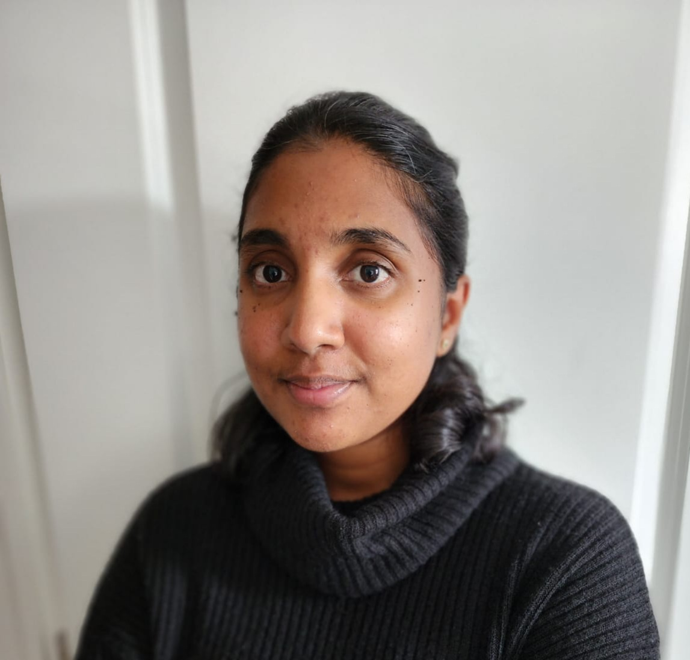

Thilsath Kayum

Summary
A highly motivated web development graduate with experience building elegant websites, looking to contribute in a growth stimulating and innovative environment.
Education
- Bachelor of Tech, Environmental Tech-University Sains Malaysia (2009-2011)
Work Experience
Helpdesk Technician-Connectwise
- Onboarding/Offboarding users on AD/Office 365
- Troubleshoot issues with mobile phones, laptops and desktops
- Works with team members/partners to deal with escalations and to report emerging issues
Jr Information Technologist
- Handles onboarding and offboarding of users
- Create and manages inventories
- Troubleshoot software/hardware issues
- Manages two on prem servers, made sure back ups are running and so on
Technical Skills
- Software Applications: Microsoft One Note, Team Viewer, Bomgar, Citrix GoTo Assist, LogMeIn, McAfee
Anti-Virus, Office 365, Microsoft Office, Active Directory, Salesforce, EMR PS Suite,VSA Kaseya
- Operating System: Windows XP, Windows Vista, Windows 7, Windows 10, Android, iOS, and Mac OS,
PlayStation OS
- Ticketing Platform: Zendesk, ServiceDesk, Salesforce, ILog, Dell DCSS, Connectwise,BMS Kaseya
Awards and Achievements
-
Printer Inventory Project-consolidated 40 over printer in CFHT
- Deployment of SonicWall VPN MFA security in CFHT
- Three times “Dell Everyday Hero” & “Dell on The Spot Award” for FY15Q3 in Dell Inc
Others
Contact me
Hobbies